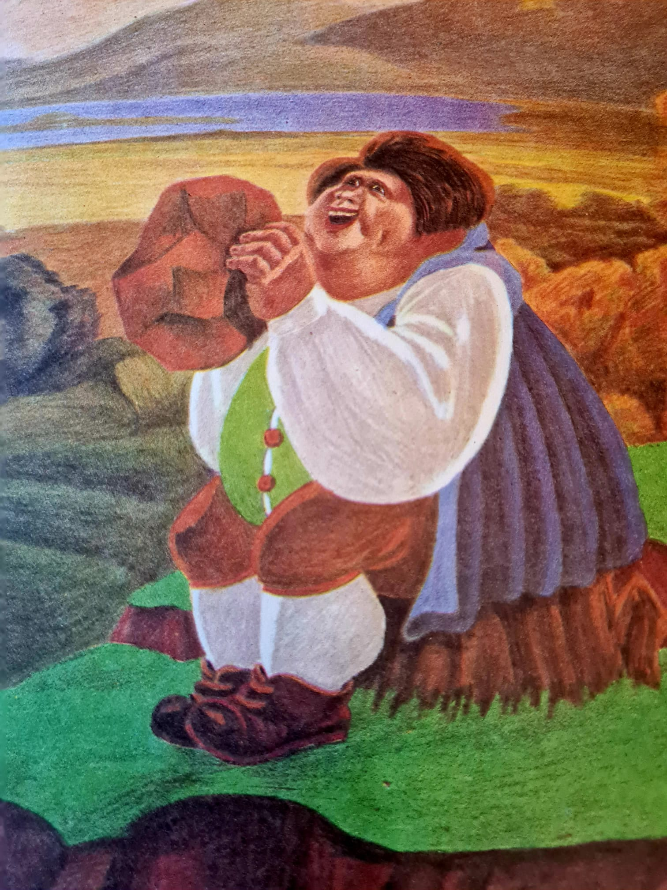

Mergând ei împreună, cei trei, Harap Alb, Calul și Gerilă se întâlnesc cu altă namilă care mânca tot ce întâlnea și striga în gură mare că îi e foame. Harap Alb îl recunoste în personaj pe Flâmanzilă, foametea, cea care nu o putea sătura nici Pământul. Aceasta îi zise că fără el nu se poate descurca mai departe, Flâmanzilă se ia după grupul celor trei și merg toți mai departe.
Credem că originea acestui personaj se trage de la numele satului (acum oraș) Flămânzi, care se află în Județul Botoșani.
